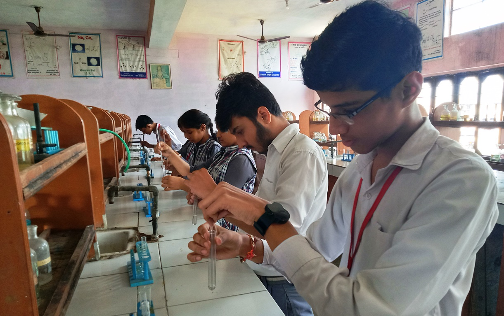

B.B.S.S.M. INTER COLLEGE
MEERUT
- home
- About us
- Message
- Admissions
- Facilities
- Library
- gallery
LABS
"There are three principle means of acquiring knowledge… Observation of nature, reflection and experimentation. Observation collects facts; reflection combines them; experimentation verifies the result of that combination."
We, at BBS Shishu Mandir emphasize learning by doing. And for the same, we have well equipped labs with various apparatus and working models. Students visualize through working models, the theory concepts being taught in their classes. We have separate labs of Physics, Chemistry and Biology where the students are revealed to the facts that reside behind the theory, they study in their respective classes.
PHYSICS LAB
PHYSICS LAB
This was the dream which, in 1952 inspired some RSS workers to take up education of children as a mission of their life. The people engaged in this noble task of nation building through proper education of younger generation, laid the foundation of the first school at Gorakhpur in a building rented at a monthly rent of five rupees. After due consideration, they named their school as Saraswati Shishu Mandir-Temple of the Goddess Saraswati dedicated to the children. Thanks to their zeal, dedication and hard work that such like schools began to be established at other places also.
CHEMISTRY LAB
CHEMISTRY LAB
This was the dream which, in 1952 inspired some RSS workers to take up education of children as a mission of their life. The people engaged in this noble task of nation building through proper education of younger generation, laid the foundation of the first school at Gorakhpur in a building rented at a monthly rent of five rupees. After due consideration, they named their school as Saraswati Shishu Mandir-Temple of the Goddess Saraswati dedicated to the children. Thanks to their zeal, dedication and hard work that such like schools began to be established at other places also.
BIOLOGY LAB
BIOLOGY LAB
This was the dream which, in 1952 inspired some RSS workers to take up education of children as a mission of their life. The people engaged in this noble task of nation building through proper education of younger generation, laid the foundation of the first school at Gorakhpur in a building rented at a monthly rent of five rupees. After due consideration, they named their school as Saraswati Shishu Mandir-Temple of the Goddess Saraswati dedicated to the children. Thanks to their zeal, dedication and hard work that such like schools began to be established at other places also.
COMPUTER LAB
COMPUTER LAB
This was the dream which, in 1952 inspired some RSS workers to take up education of children as a mission of their life. The people engaged in this noble task of nation building through proper education of younger generation, laid the foundation of the first school at Gorakhpur in a building rented at a monthly rent of five rupees. After due consideration, they named their school as Saraswati Shishu Mandir-Temple of the Goddess Saraswati dedicated to the children. Thanks to their zeal, dedication and hard work that such like schools began to be established at other places also.
A.T.L. LAB

A.T.L. LAB
This was the dream which, in 1952 inspired some RSS workers to take up education of children as a mission of their life. The people engaged in this noble task of nation building through proper education of younger generation, laid the foundation of the first school at Gorakhpur in a building rented at a monthly rent of five rupees. After due consideration, they named their school as Saraswati Shishu Mandir-Temple of the Goddess Saraswati dedicated to the children. Thanks to their zeal, dedication and hard work that such like schools began to be established at other places also.
- Admissions